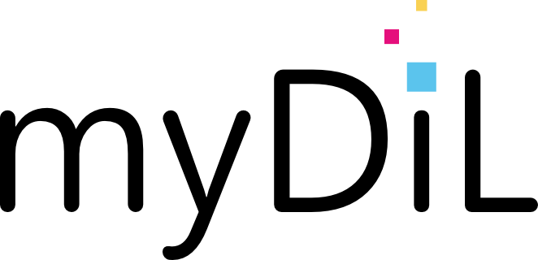
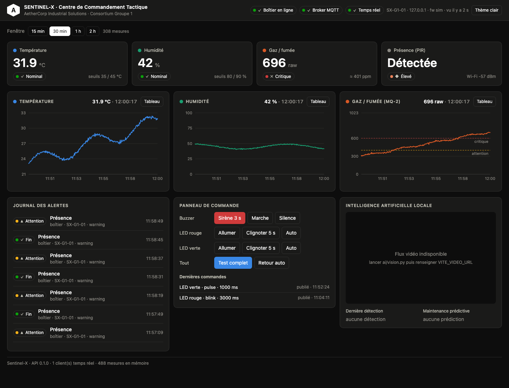
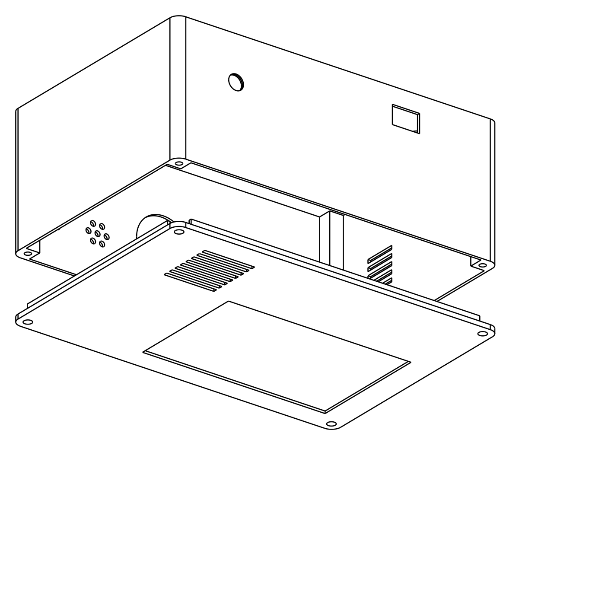
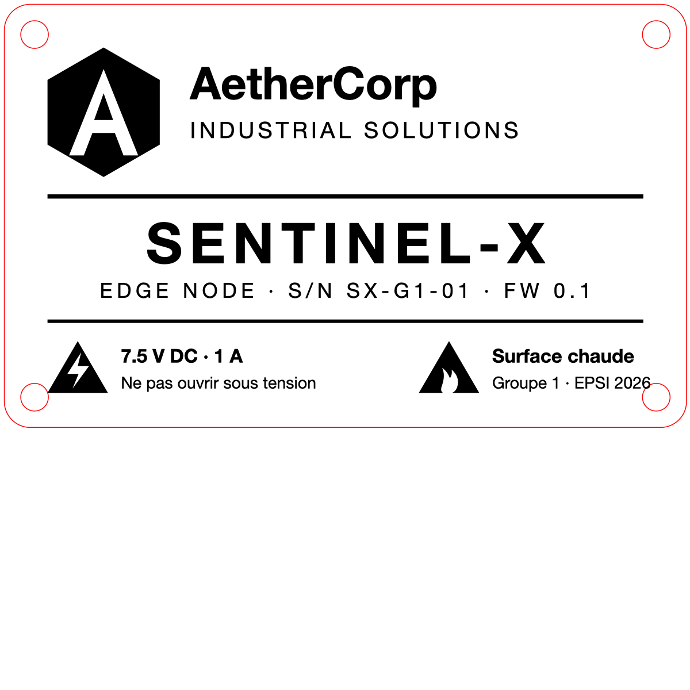

AetherCorp Industrial Solutions · Prototype cyber-physique de surveillance autonome
Le poster A3 (paysage) est inséré en dernière page du document.
AetherCorp déploie des micro-centrales isolées exposées à trois menaces simultanées : cyberattaques, intrusions physiques et risques environnementaux (fuites de gaz, surchauffes). SENTINEL-X est un boîtier de surveillance autonome (Edge Node) relié sans fil et de manière chiffrée à un Centre de Commandement Tactique matérialisé par le PC Serveur Local.
Le consortium a retenu l'option B : aucun Raspberry Pi, le serveur est l'ordinateur portable d'un apprenant qui héberge la pile Docker, l'API, le dashboard et les deux scripts d'intelligence artificielle, la webcam USB étant branchée directement dessus.
| Pilier | Exigence du cahier des charges | État |
|---|---|---|
| Edge Computing & IoT | Firmware C++ unique sur ESP8266, lecture cadencée des capteurs, OLED I2C, payloads structurés, actionneurs pilotables à distance | Réalisé et validé sur matériel |
| IA locale | Détection de présence humaine en temps réel sur webcam (< 100 ms / trame) ; maintenance prédictive sur séries temporelles sans simples conditions statiques | Réalisé (33–45 ms / trame, Isolation Forest) |
| Infrastructure & centralisation | Stack conteneurisée Docker Compose (base, API, broker MQTT), point d'accès Wi-Fi de table, plan d'adressage isolé | Stack réalisée · AP de table à déployer mardi |
| Cybersécurité | TLS de bout en bout ESP → serveur, durcissement du serveur, audit offensif croisé jeudi | MQTTS réalisé · durcissement hôte et audit jeudi |
| Brique | Choix | Pourquoi |
|---|---|---|
| Transport boîtier → serveur | MQTT sur TLS (Mosquitto) | Léger pour un microcontrôleur, reconnexion et Last Will intégrés, un seul lien chiffré à maintenir, topics lisibles par toutes les filières. |
| API | Python / FastAPI | Asynchrone natif pour le WebSocket, validation stricte des payloads (Pydantic), documentation OpenAPI générée pour le jury. |
| Base de données | PostgreSQL 16 | Séries temporelles simples indexées sur l'horodatage, directement exploitables par Scikit-Learn ; 17 280 lignes/jour ≈ 2 Mo. |
| Dashboard | React + TypeScript, servi par nginx | Rendu temps réel par WebSocket ; nginx injecte la clé API côté serveur et protège l'accès par mot de passe. |
| Vision | YOLOv8n (Ultralytics) | Détection de personne robuste, 33 ms par trame sur CPU Apple M4 en 640×480, modèle de 6 Mo. |
| Prédictif | Isolation Forest (Scikit-Learn) | Non supervisé : pas d'incident étiqueté nécessaire ; détecte une fenêtre « anormale » par sa forme (pentes, variabilité, corrélation). |
| Montage électronique | Version minimale sur USB | Six composants obligatoires sans transistor ni pont diviseur, MQ-2 en 3,3 V : moins de points de panne pour la démo. |
| Port | Service | Exposé à | Protection |
|---|---|---|---|
| 8883 | MQTTS (Mosquitto) | boîtier, scripts IA | TLS 1.3, login/mot de passe, anonyme refusé, limites anti-flood |
| 1883 | MQTT en clair | localhost uniquement (debug) | à fermer au pare-feu avant le pentest |
| 8000 (8010 en dev) | API REST + WebSocket | postes du groupe | clé API sur toutes les écritures, validation des payloads, CORS restreint |
| 8080 | Dashboard (nginx) | postes du groupe, jury | authentification HTTP, en-têtes de durcissement, clé API jamais côté navigateur |
| 8001 | Flux vidéo MJPEG de l'IA | navigateur du superviseur | lecture seule, à restreindre au laptop pour la démo |
| 5432 | PostgreSQL | personne (réseau Docker interne) | pas de port publié sur l'hôte |
| Composant | Rôle | Alimentation | Broche ESP | Remarque |
|---|---|---|---|---|
| ESP8266 NodeMCU Lolin v3 | microcontrôleur, Wi-Fi, firmware | USB 5 V (dev) / 7,5 V sur VIN (démo) | — | monté sur le pack myDiL, 2 breadboards 170 pts |
| OLED 0,96" I2C (0x3C) | IP, état Wi-Fi/MQTT, mesures, alertes | 3,3 V | D1 SCL · D2 SDA | visible en face avant |
| DHT22 (module 3 broches) | température et humidité | 3,3 V | D5 | résistance de rappel intégrée au module |
| MQ-2 | gaz combustibles / fumée | 3,3 V volontairement | A0 (analogique) | pas de pont diviseur ; seuils relatifs à la ligne de base |
| PIR mini (APKLVSR) | présence | 5 V (VU) | D6 | sortie 3,3 V, sans potentiomètre, délai fixe |
| Buzzer passif (module 3 broches) | alarme mélodique par PWM | 3,3 V ou 5 V (VU) | D7 | mélodie extraite des données de jeu Doom (E1M1) |
| LED bicolore cathode commune | vert = nominal, rouge = alerte / liaison perdue | — | D0 rouge · D8 verte | 2 × 220 Ω |
Broches de démarrage préservées : D3 (GPIO0), D4 (GPIO2) et D8 (GPIO15) ne reçoivent qu'une LED vers la masse (D8), jamais de signal au niveau haut au boot. D3/D4/EN/RST/VIN restent libres : un fil mal placé sur EN a figé la carte lors du premier câblage, l'erreur est documentée dans le guide.
Deux modes exclusifs : en développement, l'ESP est alimenté par le câble USB et fournit le 3,3 V (broche 3V) et le 5 V de l'USB (broche VU) ; en démonstration, le bloc 220 V → 7,5 V alimente VIN, et le convertisseur DC-DC 7,5 V → 5 V fournit le rail 5 V. Le bloc 7,5 V n'est jamais branché en même temps que l'USB. Budget mesuré en 5 V : ESP ≈ 80 mA (pics 300 mA au démarrage radio), MQ-2 ≈ 150 mA, PIR ≈ 65 mA, OLED ≈ 20 mA, soit ≈ 350 mA en régime établi. Le firmware désactive la calibration radio au boot et limite la puissance d'émission à 17 dBm pour réduire les pics sur une alimentation USB.
Un seul fichier firmware/src/main.cpp (C++, framework Arduino, PlatformIO, carte esp12e),
boucle non bloquante cadencée par millis(). Compilation : 31 Ko de RAM statique (38 %), 424 Ko de flash (41 %),
≈ 17,6 Ko de tas libre une fois la session TLS établie.
| Événement | Comportement |
|---|---|
| Toutes les 2 s | lecture DHT22 (filtre de plausibilité −40…80 °C, 0…100 %), médiane de 8 échantillons ADC du MQ-2, état PIR |
| Toutes les 5 s | publication sentinel/g1/telemetry (température, humidité, gaz brut et ppm estimés, présence, RSSI, tas libre) |
| Franchissement de seuil | publication sentinel/g1/alerts à l'entrée, à l'escalade (attention → critique) et à la sortie avec hystérésis |
| Gaz | 3 min de chauffe sans alerte, ligne de base = moyenne sur 20 s puis suivi lent ; alerte à +80 (attention) et +200 (critique) au-dessus de la ligne de base |
| PIR | alerte motion on/off, mélodie d'alarme, LED rouge |
| Panne DHT22 | 3 lectures ratées consécutives → alerte sensor_fault |
| Connexion MQTT | status retenu online:true, Last Will online:false publié par le broker si le boîtier disparaît |
Commande cmd | buzzer, led_red, led_green, led : on / off / blink / pulse ; camera on/off : intrusion vue par l'IA → écran « ALERTE CAMERA », LED rouge, mélodie |
| Écran OLED | identité, IP, état MQTT et RSSI, mesures, ligne d'état : nominal / ALERTE PIR / CAMERA / CAM+PIR / gaz / temp |
| Mesure | Attention | Critique | Hystérésis |
|---|---|---|---|
| Température | > 35 °C | > 45 °C | 2 °C |
| Humidité | > 80 % | > 90 % | 3 % |
| Gaz (valeur brute 0–1023) | ligne de base + 80 | ligne de base + 200 | 30 |
Ces seuils sont des garde-fous « réflexe ». La détection fine d'une dérive lente et corrélée est confiée au modèle prédictif côté serveur (§ 8.2), conformément au sujet qui proscrit les simples conditions statiques.
include/secrets.h, exclu de Git ; le dépôt ne contient qu'un secrets.h.example.pio run -e bench) : radio coupée, mesures tracées sur le port série, pour câbler et tester sans réseau.| Service | Image | Rôle | Exposition |
|---|---|---|---|
mosquitto | eclipse-mosquitto 2.0 | broker MQTT, listener TLS 8883, listener clair 1883 (debug), mots de passe, limites anti-flood | 8883 (table), 1883 (local) |
db | postgres 16-alpine | stockage, volume persistant, healthcheck | aucune |
api | build local (python 3.12-slim, non root) | pont MQTT → base → WebSocket, REST, validation, clé API | 8000 |
dashboard | build local (node 22 → nginx 1.27) | front React, proxy /api et /ws avec injection de la clé, authentification HTTP | 8080 |
Mise en service : infra/scripts/bootstrap.sh <IP> génère le .env (secrets aléatoires), la CA et le certificat serveur, le fichier de mots de passe Mosquitto et celui du dashboard ; puis docker compose up -d --build.
| Topic MQTT | Sens | Contenu |
|---|---|---|
sentinel/g1/telemetry | boîtier → serveur, 5 s | {"device_id","uptime_ms","temperature","humidity","gas_raw","gas_ppm","motion","rssi","heap_free"} |
sentinel/g1/alerts | boîtier → serveur | {"type","state":"on|off","value","severity":"info|warning|critical"} |
sentinel/g1/status | boîtier → serveur, retenu | {"online","ip","fw"} + Last Will |
sentinel/g1/cmd | serveur → boîtier | {"actuator","action","duration_ms","cmd_id"} |
| Méthode | Route (préfixe /api/v1) | Rôle | Accès |
|---|---|---|---|
| GET | /health | état API, broker, base, clients WebSocket | libre |
| POST | /alerts | point d'entrée obligatoire du sujet : réception d'un changement d'état | clé API |
| GET | /alerts, /telemetry, /telemetry/latest, /devices, /commands | historiques et état | libre (réseau de table) |
| POST | /commands | pilotage des actionneurs, publié sur cmd | clé API |
| POST | /ai/detections, /ai/predictions | résultats des scripts IA | clé API |
| WS | /ws | diffusion temps réel : telemetry, alert, status, command, detection, prediction | via nginx authentifié |
Contrat complet : docs/CONTRAT_DONNEES.md. Documentation OpenAPI générée : /docs sur l'API.
| Table | Contenu | Alimentée par |
|---|---|---|
devices | état du boîtier : online, IP, firmware, dernier signe de vie | status + chaque message |
telemetry | mesures horodatées (index sur ts, device_id) | MQTT, POST /telemetry |
alerts | type, état, valeur, sévérité, source (esp / api / ai) | MQTT, POST /alerts, IA |
commands | ordres envoyés et statut de publication | POST /commands |
detections | détections de la vision : label, confiance, boîte englobante | POST /ai/detections |
predictions | scores d'anomalie, fenêtre, caractéristiques | POST /ai/predictions |
Schéma SQL exporté : infra/db/schema.sql. Console : infra/scripts/db-shell.sh. Volume : 17 280 lignes de télémétrie par jour, ≈ 2 Mo.

Script ai/vision.py sur le laptop : capture de la webcam USB, redimensionnement en 640×480, inférence
YOLOv8n (Ultralytics, poids de 6 Mo) restreinte à la classe personne, seuil de confiance 0,5.
POST /alerts type intrusion critique, commande camera on vers le boîtier (écran, LED rouge, mélodie), puis une détection toutes les 2 s.camera off.| Mesure | Valeur |
|---|---|
| Inférence par trame | 33 ms (caméra intégrée), 32–45 ms (webcam USB 1080p redimensionnée) |
| Débit | 15–24 trames/s, limité par la webcam |
| Confiance typique | 0,84–0,93 sur une personne de face à 1–2 m |
Script ai/predict.py. L'historique de télémétrie est découpé en fenêtres de 300 s (pas de 60 s). Pour
chaque fenêtre on calcule sept caractéristiques cinétiques :
| Caractéristique | Signification |
|---|---|
temp_mean, gas_mean | niveau moyen de température et de gaz |
temp_slope, gas_slope, hum_slope | pente par minute (régression linéaire) : une hausse lente est visible bien avant un seuil |
gas_std | variabilité du gaz dans la fenêtre |
temp_gas_corr | corrélation température / gaz : la signature d'un incident thermique avec émission de gaz |
Un Isolation Forest (200 arbres, contamination 3 %) apprend la forme « normale » des fenêtres sur les 12 dernières heures,
se ré-entraîne toutes les 30 min, et score la fenêtre courante toutes les 30 s : score négatif = anomalie, alerte
anomaly publiée et levée automatiquement. Premier entraînement réel : 133 fenêtres à partir de 2 042 mesures
du boîtier, verdict « normal » (score +0,23). Le scénario de validation est joué avec le simulateur
(backend/tools/simulate_esp.py --drift) qui injecte une dérive lente et simultanée de température et de gaz.
| Menace | Mesure en place | Preuve | État |
|---|---|---|---|
| Écoute du Wi-Fi de table (MitM, sniffing des mesures et commandes) | MQTT sur TLS 1.3 entre le boîtier et le broker ; certificat serveur épinglé par empreinte sur l'ESP | Handshake openssl s_client ci-dessous ; capture Wireshark du port 8883 à joindre jeudi (trames Application Data, aucun JSON lisible) | en place |
| Injection de fausses mesures ou de commandes sur le broker | Anonyme refusé, authentification par compte, topics préfixés sentinel/g1/ | mosquitto_pub sans identifiants → Connection Refused: not authorised | en place |
| Flood MQTT / déni de service du broker | 50 connexions max, 20 messages en vol, file de 1 000, paquets ≤ 4 Ko | infra/mosquitto/mosquitto.conf | en place |
| Écritures non autorisées sur l'API (fausses alertes, buzzer) | Clé API sur toutes les écritures, comparaison en temps constant, validation stricte des payloads | POST /commands sans clé → HTTP 401 ; télémétrie hors plage rejetée (observé : 125 °C refusé) | en place |
| Fuite de la clé API via le navigateur | La clé n'est jamais livrée au front : nginx et le serveur de dev l'injectent côté serveur | dashboard/nginx/default.conf.template | en place |
| Accès au dashboard par un tiers sur le réseau | Authentification HTTP, en-têtes X-Frame-Options, nosniff, version nginx masquée | GET / sans identifiants → HTTP 401 | en place |
| Accès direct à la base de données | Aucun port publié ; accès uniquement via le réseau Docker interne | docker compose ps : 5432/tcp non mappé | en place |
| Fuite de secrets par le code source | .env, mots de passe, certificats, secrets.h exclus de Git ; secrets générés aléatoirement au bootstrap | git ls-files ne contient aucun de ces fichiers | en place |
| Élévation de privilèges via un conteneur | API exécutée par un utilisateur non root ; base et broker sur images officielles | backend/Dockerfile | en place |
| Port MQTT en clair atteignable depuis le réseau | Limiter 1883 à localhost et le fermer au pare-feu | — | jeudi matin |
| Dashboard et API en HTTP sur le réseau de table | Mot de passe transmis en clair : restreindre l'accès au seul laptop ou passer en HTTPS avec la CA locale | — | jeudi matin |
| Compromission de l'hôte (laptop) | Pare-feu entrant, SSH par clés uniquement, Docker sans exposition du socket, mises à jour | — | jeudi matin (filière CYBER) |
| Vol physique du boîtier | Identifiants Wi-Fi et MQTT lisibles dans la flash | risque résiduel accepté : rotation du mot de passe MQTT si le boîtier disparaît | résiduel |
$ openssl s_client -connect serveur:8883 -brief
CONNECTION ESTABLISHED
Protocol version: TLSv1.3
Ciphersuite: TLS_AES_256_GCM_SHA384
Peer certificate: C=FR, O=AetherCorp, OU=Sentinel-X G1, CN=<ip-serveur>
Hash used: SHA256 · Signature type: rsa_pss_rsae_sha256
$ openssl x509 -in infra/mosquitto/certs/server.crt -noout -issuer -dates
issuer=C=FR, O=AetherCorp, OU=Sentinel-X G1, CN=Sentinel-X CA
notBefore=Oct 5 08:59:35 2026 GMT notAfter=Oct 5 08:59:35 2027 GMT
$ mosquitto_pub -h serveur -p 1883 -t test -m x (sans identifiants)
Connection error: Connection Refused: not authorised.
$ curl -X POST http://serveur:8000/api/v1/commands -d '{...}' (sans clé) → HTTP 401
$ curl http://serveur:8080/ (sans mot de passe) → HTTP 401
Côté boîtier, le journal série confirme : [mqtt] connexion 10.108.128.150:8883 (TLS)... OK. Le certificat est signé par une autorité locale
générée par le consortium ; l'ESP vérifie l'empreinte SHA-1 du certificat serveur, ce qui rend toute substitution de serveur impossible sans accès au boîtier.
127.0.0.1 ; API publiée sur 127.0.0.1:8000 uniquement, le dashboard nginx restant le seul point d'entrée.| Attaque | Outil | Vecteur | Résultat observé | Correctif |
|---|---|---|---|---|
| Reconnaissance | Nmap | scan des ports du serveur depuis le réseau de table | à remplir : ports visibles, services identifiés | à remplir |
| Homme du milieu | Wireshark / arpspoof | interception Wi-Fi entre boîtier et serveur | à remplir : trafic 8883 illisible attendu | à remplir |
| Injection de payload | mosquitto_pub, curl | fausses mesures / commandes sur le broker ou l'API | à remplir : refus attendu (401, not authorised) | à remplir |
| Déni de service | hping3, scripts | flood MQTT / HTTP | à remplir : limites du broker, charge CPU/RAM | à remplir |
| Force brute | hydra | mot de passe du dashboard, comptes MQTT | à remplir | à remplir |
| Cible | Attaque | Outil | Résultat | Recommandation transmise |
|---|---|---|---|---|
| à remplir | à remplir | à remplir | à remplir | à remplir |
À remplir : vulnérabilités confirmées, sévérité, correctifs appliqués avant la soutenance, risques résiduels acceptés.
./infra/scripts/bootstrap.sh 192.168.10.1 # .env, CA + certificat, mots de passe docker compose up -d --build # broker, base, API, dashboard cd firmware && make upload # secrets.h renseigné : Wi-Fi, IP, empreinte cd ai && .venv/bin/python vision.py # webcam USB → YOLO → API cd ai && .venv/bin/python predict.py # maintenance prédictive
curl http://localhost:8000/api/v1/health → status: ok, broker et base connectés.caffeinate -dims) : une veille de 98 min a été observée pendant les tests, le boîtier s'est reconnecté seul.heap_free dans la télémétrie ≥ 10 Ko ; valeur courante ≈ 17,6 Ko.docker stats pour CPU/RAM des conteneurs ; journaux Mosquitto persistés dans un volume avec rotation implicite par taille de file ; docker compose logs -f api pour les payloads rejetés. En cas de redémarrage de l'hôte, restart: unless-stopped relance la pile.
| Symptôme | Cause | Résolution |
|---|---|---|
| Port série qui disparaît à l'ouverture (macOS) | pilote CH340 natif sensible aux lignes DTR/RTS forcées | ouverture du port avec les réglages par défaut ; documenté |
| Carte figée, « Fatal exception (0) » en boucle | fil sur la broche EN pendant le câblage du DHT22 | recâblage sur 3V / G / D5 côté droit, reflash |
| Valeurs DHT22 aberrantes (125 °C) | fil de données sur D6 au lieu de D5, trames corrompues | filtre de plausibilité dans le firmware + correction du câblage |
| Alerte gaz permanente | seuils absolus inadaptés au MQ-2 alimenté en 3,3 V | seuils relatifs à une ligne de base auto-calibrée après 3 min de chauffe, médiane ADC |
| Le script de vision ouvre l'iPhone au lieu de la webcam | caméra de continuité insérée dans la liste des caméras | sélection par nom, menu au lancement, continuité désactivée en démo |

fablab/boitier.py, importé dans Fusion 360 pour la finition.Plaque 80 × 50 mm, plexiglas ou contreplaqué 3 mm, fixée en face avant. Noir = gravure, rouge = découpe (contour arrondi, 4 trous M3). Contenu : logo AetherCorp, nom du produit, numéro de série SX-G1-01, pictogrammes de sécurité (7,5 V DC, ne pas ouvrir sous tension, surface chaude).

fablab/plaque-gravure.svg.| Chemin | Contenu |
|---|---|
README.md | démarrage rapide, structure, endpoints, sécurité, exploitation |
docker-compose.yml, .env.example | pile serveur et variables (jamais de secret commité) |
infra/ | configuration Mosquitto, scripts bootstrap / certificats / mots de passe / base, schéma SQL exporté |
backend/ | API FastAPI (modèles, schémas, pont MQTT, WebSocket, routes), Dockerfile, simulateur d'ESP |
firmware/ | projet PlatformIO : main.cpp, config.h, secrets.h.example, Makefile, mode banc |
dashboard/ | application React/TypeScript, configuration nginx, Dockerfile |
ai/ | vision.py, predict.py, common.py, dépendances |
docs/ | contrat de données, architecture, câblage, boîtier, base de données, source de ce dossier |
fablab/ | plaque de gravure SVG, exports CAO |
livrables/ | dossier PDF, présentation, vidéo |
Historique Git : commits sémantiques par brique (feat(firmware), feat(api), feat(dashboard), feat(ai), docs, chore), aucun secret ni fichier généré dans l'historique.